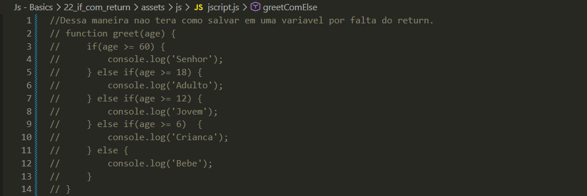
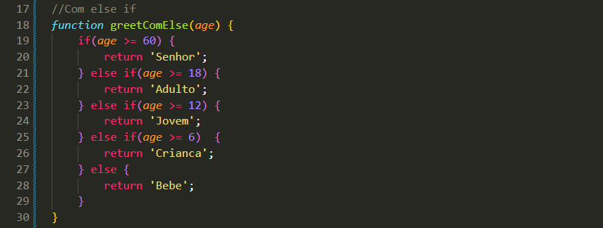
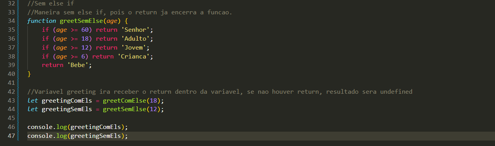

if com return
Intro
Na aula anterior vimos as condições de if, else e else if, utilizando mais de duas condições.
Na aula anterior vimos as condições de if, else e else if, utilizando mais de duas condições.
Iremos continuar com o mesmo exemplo de comprimento da aula anterior.
Caso precisemos retornar um valor de uma função e armazená-lo em uma variável, é necessário utilizar o return. Dessa forma, o valor poderá ser salvo e reutilizado. Exemplo:



Quando usamos return dentro de uma função, não é obrigatório utilizar else if, pois o return já encerra a execução da função. Dessa forma, podemos usar apenas if e, ao final, um return, que funciona como um else.